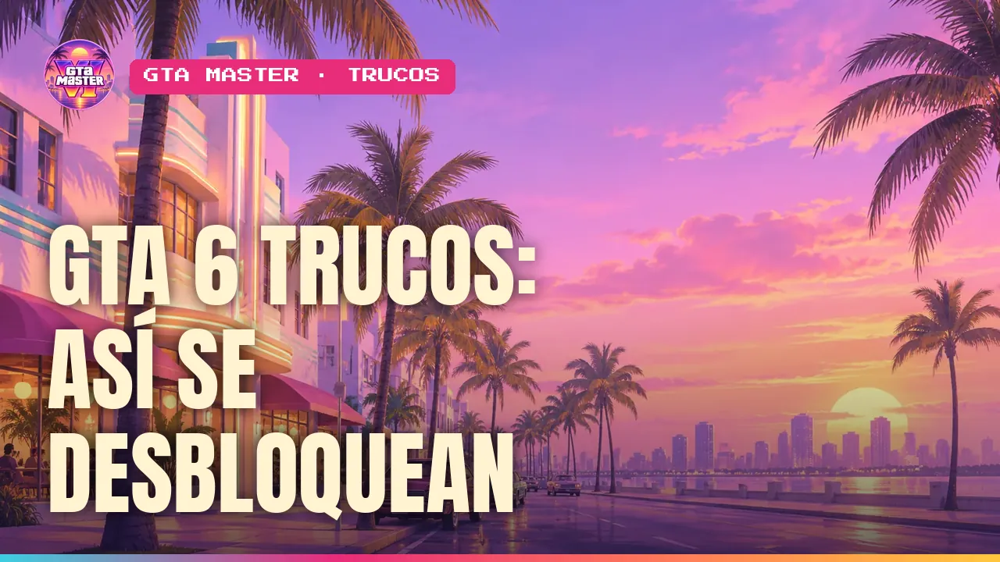

GTA 6 trucos: los 61 códigos solo se desbloquean al terminar la historia

GTA 6 trucos: hay 61 códigos, pero solo funcionan al acabar la historia y con un reto cada uno. Cómo meterlos en PS5 y Xbox y qué pasa con los trofeos.
GTA 6 tiene trucos, pero no puedes usarlos desde el primer minuto. Los 61 códigos de Grand Theft Auto VI están bloqueados hasta que terminas la historia de Jason y Lucia, y cada uno exige además superar un reto concreto dentro del juego.
Es el gran cambio respecto a GTA V, donde bastaba con meter la combinación de botones para tener un tanque en mitad de la autopista. Las primeras guías, publicadas ayer y esta madrugada con el juego ya en la calle, coinciden en lo esencial: GamesRadar+ avisa de que los códigos no funcionan hasta acabar la campaña «aunque ya te sepas el código», y la guía de Vandal añade que, si los introduces antes de cumplir su requisito, no pasa nada.
¿Cómo se desbloquean los trucos de GTA 6?
El proceso tiene dos capas. Primero, la historia principal: al ver los créditos aparece un nuevo apartado de Trucos dentro del menú de Progreso (se abre con el panel táctil en PS5 o el botón de menú en Xbox, y se cambia de pestaña con R1/RB). Ahí ves la lista completa y lo que pide cada truco.
Segundo, el reto de cada código. Según la lista que recoge TweakTown a partir de Insider Gaming y de la web de guías de trofeos PowerPyx, hay 61 trucos repartidos en cinco grupos: personaje, combate, vehículos, entorno y filtros de pantalla. Algunos se desbloquean solo por acabar la historia; otros te mandan a los campos de tiro, al gimnasio o a completar desafíos de exploración, compras o supervivencia. Según Red Bull, el juego cuenta también lo que ya hayas hecho antes de terminar la campaña.
Si todavía no has empezado, ten en cuenta que la historia ronda las 80 horas según un desarrollador de Rockstar. Los trucos son, literalmente, el premio final.
¿Cómo se introducen los trucos en PS5 y Xbox?
Los códigos se meten con el móvil del juego y son iguales en las dos consolas:
- Pulsa arriba en la cruceta para sacar el móvil.
- Mantén L1 + R1 en PS5 o LB + RB en Xbox Series X|S.
- Introduce la combinación con la cruceta.
Por ahora no hay trucos para PC, porque el juego solo ha salido en PS5 y Xbox Series X|S. Y olvídate de los números de teléfono de GTA V: no hay ningún truco por llamada conocido.
Lista de trucos de GTA 6 con código confirmado
Estos son los que aparecen con la misma combinación en al menos dos guías distintas (Vandal y Red Bull; el del dinero, también en GamesRadar+):
| Truco | Requisito para desbloquearlo | Código |
|---|---|---|
| 250.000 dólares | Terminar la historia | ↑ → ↓ ← ↑ ← ↓ → |
| Munición infinita | 25 medallas de plata en campos de tiro | ↓ ↑ → ↓ ← ← ↑ ↓ ↓ ↓ |
| Maibatsu Boomazoom | 5 desafíos de compras | ← ↑ → ↓ ← ← ↑ ← |
| Filtro Cataclismo | Descubrir el Vamos de Martha | ↓ ↓ ↑ → → ↑ ← ← → → |
¿Qué trucos faltan por descubrir?
La mayoría. Las guías marcan muchos códigos como «por confirmar»: se conoce el requisito, que aparece en el propio menú del juego, pero aún no la combinación. Estos son algunos de los retos confirmados por varias fuentes:
- Munición máxima: 25 medallas de bronce o mejores en los campos de tiro.
- Subir el nivel de búsqueda: dar esquinazo a la policía con tres estrellas 50 veces.
- Sin daño por caída: sobrevivir 20 veces a una caída libre de unos 12 metros.
- Chaleco antibalas: completar 100 entrenamientos.
- Tanque Rhino: superar todos los desafíos de supervivencia.
- Flamenco hinchable: destruir 50 flamencos de cocaína.
- Filtro Golden Hour: pasar cuatro horas de la mano con tu pareja.
Hay detalles muy de Rockstar, como los filtros de pantalla que convierten Leonida en una tele antigua en blanco y negro, en píxeles o directamente boca abajo.
¿Los trucos desactivan los trofeos y logros?
Sí, y es lo más importante antes de probarlos. Las tres guías coinciden: en cuanto activas un truco se bloquean los trofeos y logros y también el guardado durante el resto de esa sesión de juego. El consejo es sencillo: guarda antes de hacer locuras y, cuando acabes, vuelve a cargar la partida.
Rockstar no ha publicado una lista de trucos fuera del juego, así que conviene desconfiar de las webs que prometen códigos para el modo online: Vandal recuerda que en la saga los trucos son cosa del modo historia.
Qué significa para el jugador
Rockstar convierte los trucos en contenido de final de partida. Ya no son un atajo para saltarse misiones difíciles, sino una recompensa para quien quiere seguir haciendo el loco en Leonida después de los créditos. A cambio, obliga a exprimir el mapa: campos de tiro, coleccionables, carreras y desafíos que muchos jugadores habrían dejado de lado.
Iremos completando la sección de trucos de nuestra guía de GTA 6 a medida que se confirmen nuevos códigos. Mientras tanto, si te pica la nostalgia, en el canal repasamos los 35 trucos de GTA V que podían volver: ya sabes que en GTA 6 el sistema es muy distinto.
Y si aún no lo tienes claro, este es el tráiler de lanzamiento oficial:
¿Quieres saber qué piensa la crítica antes de lanzarte? Lo tienes en las reseñas de GTA 6: 99 en Metacritic.


Comentarios
Los comentarios funcionan con Disqus: puedes entrar con Google, Facebook, X o tu email. Al pulsar el botón se conecta con Disqus, que usa sus propias cookies. Más información en nuestra política de privacidad.